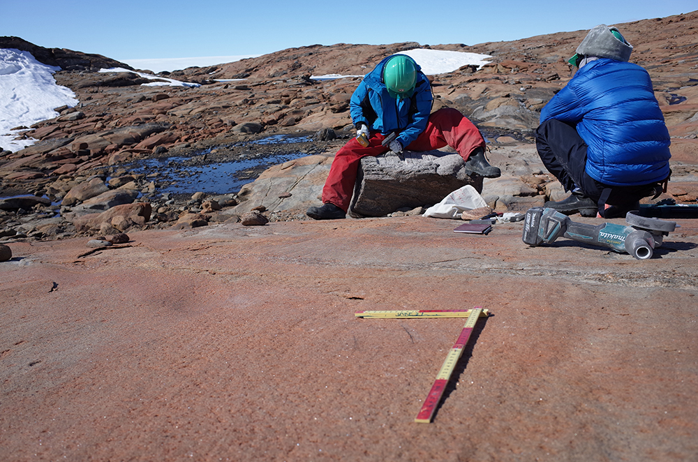

Welcome to Moto Kawamata's website.
kawamata.moto@nipr.ac.jp
総合研究大学院大学
複合科学研究科極域科学専攻5年一貫博士課程
テーマ：東南極宗谷海岸露岩域における氷床変動史の復元
地形・地質学的な野外調査を基本とし、室内実験（宇宙線生成核種を用いた表面露出年代測定・南極湖沼コアの年代測定） や地形解析（UAVを用いた広範囲の数値地形情報の取得）を組み合わせた包括的な議論を基に、南極氷床変動のメカニズムに迫ることを目標としています。
